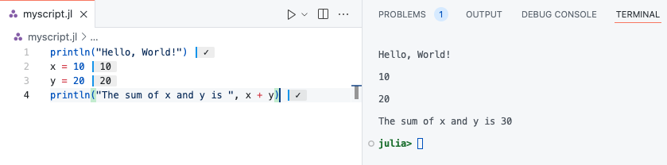

using LinearAlgebra
# Define a vector
v = [3, 4]
# Compute the Euclidean norm (magnitude) of the vector
norm_v = norm(v)
println("The norm of the vector is: ", norm_v)The norm of the vector is: 5.0As a beginner Julia developers, you have learned interactive coding within the REPL. The content of this page will help you level-up by explaining how to use scripts and Integrated Development Environments (IDEs). Scripts allow you to write and save code in files, making it easier to test, reuse, and share your work. This is essential for building real-world projects, where your code will often be longer and more complex. IDEs provide helpful tools like auto-completion, debugging, syntax highlighting, and version control integration, which improve productivity and help catch errors early (avoiding tedious debugging hours…). Using scripts and IDEs sets you up with good habits and gives you the structure needed to grow as a developer.
While the Julia REPL is great for interactive experimentation, you’ll often want to write and run larger programs. This is where running Julia scripts comes in.
A Julia script is a plain text file that contains Julia code. You can create a Julia script using any text editor, such as VS Code, Sublime Text, or even a simple text editor.
Save the file with the .jl extension, for example myscript.jl.
To run a Julia script, open your terminal or command prompt, navigate to the directory where the script is located, and then use the following command:
julia myscript.jlThis will execute the code in myscript.jl and output any results in the terminal. If your script includes print statements, those outputs will be displayed. See the command-line interface page for more details.
Here’s an example of a simple Julia script:
# myscript.jl
println("Hello, World!")
x = 10
y = 20
println("The sum of x and y is ", x + y)To run this script, save it as myscript.jl and use the command:
julia myscript.jlThe output will look like this:
Hello, World!
The sum of x and y is 30You can also pass command-line arguments to a Julia script. For example, let’s modify the script to accept arguments:
# args_example.jl
println("Arguments passed to the script: ", ARGS)Now, when running the script, you can pass arguments like this:
julia args_example.jl arg1 arg2 arg3The output will be:
Arguments passed to the script: ["arg1", "arg2", "arg3"]You can access the arguments as elements of the ARGS array within your script.
You can also run Julia scripts directly from the REPL by using the include() function. To run the myscript.jl script, for example:
include("myscript.jl")This command will execute the code in the script, and you’ll see the output in the REPL.
If you’re using an IDE like VS Code with the Julia extension, you can run the script directly from within the editor by pressing the “Run” button or using the appropriate keyboard shortcut. This is convenient for testing and iterating on your code without having to switch back and forth between the editor and the terminal. See the Running Code page from Julia in VS Code documentation for more details.

We strongly encourage you configure VS Code for Julia. This set up will be handy for the exercises in the rest of this lecture. Read why in the next section.
While any text editor can be used to write Julia code, Integrated Development Environments (IDEs) significantly enhance the programming experience. Notable options for Julia include Visual Studio Code (VS Code), Jupyter, Pluto.jl, Vim, and Emacs. Each of these editors offers unique features like interactive environments, real-time code feedback, and specialized plugins for a smoother development process. For instance, VS Code with the Julia extension is the most feature-rich IDE for Julia, while Jupyter provides an interactive notebook environment. Pluto.jl focuses on reactive notebooks, and Vim and Emacs offer efficient, customizable text editing solutions.
The best IDE for Julia is Visual Studio Code, or VS Code, developed by Microsoft. Indeed, the Julia VS Code extension is the most feature-rich of all Julia IDE plugins. You can download it from the VS Code Marketplace and read its documentation.

Julia for Visual Studio Code is a powerful, free IDE for the Julia language. Visual Studio Code is a powerful and customizable editor. With a completely live environment, Julia for VS Code aims to take the frustration and guesswork out of programming and put the fun back in. We build on Julia’s unique combination of ease-of-use and performance. Beginners and experts can build better software more quickly, and get to a result faster. Julia is an officially supported language on the VS Code documentation.

You can write Jupyter notebooks and use the Jupyter interactive environment. To do so you need to install the IJulia.jl package. IJulia is a Julia-language backend combined with the Jupyter interactive environment (also used by IPython). This combination allows you to interact with the Julia language using Jupyter/IPython’s powerful graphical notebook, which combines code, formatted text, math, and multimedia in a single document. IJulia is a Jupyter language kernel and works with a variety of notebook user interfaces. In addition to the classic Jupyter Notebook, IJulia also works with JupyterLab, a Jupyter-based integrated development environment for notebooks and code. The nteract notebook desktop supports IJulia with detailed instructions for its installation with nteract. Please visit this webpage to get a tutorial on how to use Julia in Jupyter notebook.
Julia has a rich ecosystem of packages that extend the language’s capabilities for various domains, such as machine learning, data science, optimization, and more. The Julia Packages webpage is the official source for Julia packages. This section will cover how to manage and use packages in Julia.
Julia comes with a set of standard libraries, which are built-in packages available with the installation. These libraries cover a wide range of functionality, from mathematical operations to file handling and system utilities. You do not need to install them separately; they are ready to be used as soon as you start Julia.
One commonly used standard library is LinearAlgebra, which provides tools for linear algebra, such as matrix factorizations and vector operations.
The LinearAlgebra library can be used to compute the norm of a vector. Here’s how you can do that:
using LinearAlgebra
# Define a vector
v = [3, 4]
# Compute the Euclidean norm (magnitude) of the vector
norm_v = norm(v)
println("The norm of the vector is: ", norm_v)The norm of the vector is: 5.0In this example, the norm() function calculates the Euclidean norm (or 2-norm) of the vector v, which in this case is
\sqrt{3^2 + 4^2} = 5.
These standard libraries help you to get started quickly with common tasks, without the need to install additional packages.
To install a package, you can use the Pkg module, which is part of Julia’s standard library. Here’s how to install a package:
] in the REPL.add command to install a package.Example:
] add DataFramesThis will install the DataFrames package, which is widely used for data manipulation in Julia. To get the list of installed packages, type:
] statusYou can also install the package directly from the Julia mode:
using Pkg
Pkg.add("DataFrames")Once a package is installed, you can use it by importing it into your code using the using keyword. This makes the functions and types of the package available for use.
Example:
using DataFrames
df = DataFrame(A = 1:4, B = ["a", "b", "c", "d"])| Row | A | B |
|---|---|---|
| Int64 | String | |
| 1 | 1 | a |
| 2 | 2 | b |
| 3 | 3 | c |
| 4 | 4 | d |
This creates a simple DataFrame object with two columns A and B.
To update the packages installed in your environment to their latest versions, use the update command in the package manager.
Example:
] updateYou can also update a specific package by running:
] update PackageNameYou can also update packages directly from the Julia mode:
using Pkg
Pkg.update()
# or
Pkg.update("PackageName")If you no longer need a package, you can remove it using the rm command.
Example:
] rm DataFramesThis will uninstall the DataFrames package from your environment.
You can also remove packages directly from the Julia mode:
using Pkg
Pkg.rm("DataFrames")In Julia, you can manage different environments, each with its own set of installed packages. This allows you to work on multiple projects with different dependencies without conflicts. You can create a new environment by navigating to a directory and typing:
] activate .This will activate the environment in the current directory. You can also specify a different directory or environment path by providing it after activate. If you want to come back to the global environment, type:
] activateNote that the packages installed in the global environment are visible from any other environment. See the Working with Environments page for more details.
You can also activate environments directly from the Julia mode. For instance, for the current directory:
using Pkg
Pkg.activate(".")Working with packages is essential to leveraging Julia’s powerful ecosystem. Understanding how to install, update, and remove packages, as well as using environments to manage project-specific dependencies, will help you make the most out of Julia’s vast libraries.
Let us put these concepts into practice to prepare your work environment for the exercises in this lecture.
Navigate to your working directory dedicated to this lecture through a terminal or command prompt.
Start Julia inside the directory using julia.
Enter the package manager mode by typing ] in the REPL.
Activate the environment associated to this directory by typing activate .
Add Plots, DataFrames and CSV packages to the environment using add.
Check installation of packages using the status command.
In your work directory, a Project.toml and Manifest.toml file are created and packages are installed locally.
Recall to activate this environment at the start of each work session for this lecture.